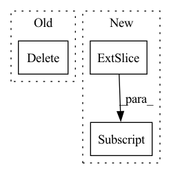

Pattern ID :20836
Before Change
file_name = im_ann["file_name"] if "file_name" in im_ann else "{:012}".format(id_) + ".jpg"
del im_ann, annotations
return (res, img_info, file_name)
def load_anno(self, index):After Change
res[ix, 4] = cls
r = min(self.img_size[0] / height, self.img_size[1] / width)
res[:, :4] *= r
img_info = (height, width)
resized_info = (int(height * r), int(width * r))In pattern: SUPERPATTERN
Frequency: 4
Non-data size: 3
Instances Fragment ID: 67214561
Project Name: megvii-basedetection/yolox
Commit Name: c9fe0aae2db90adccc90f7e5a16f044bf110c816
Time: 2021-08-19
Author: ruinmessi@gmail.com
File Name: yolox/data/datasets/coco.py
M Class Name: COCODataset
N Class Name: COCODataset
M Method Name: load_anno_from_ids(2)
N Method Name: load_anno_from_ids(2)
M Parent Class: Dataset
N Parent Class: Dataset
M File Name: yolox/data/datasets/coco.py
N File Name: yolox/data/datasets/coco.py
M Start Line: 60
M End Line: 90
N Start Line: 116
N End Line: 151
Before Change
cov[N:, :N] = cross.T
cov[:N, N:] = cross
del cross
if cov.shape[0] < 2000:
X = np.random.multivariate_normal(mean, cov, m)
else:After Change
vp[(first + sparse_variables_2):, _] = 0
vp = decorrelate_dims(vp, cov[N:, N:])
vp /= np.sqrt(np.diag((vp.T @ cov[N:, N:] @ vp)))
cross = np.zeros((N, M))
for _ in range(k): Fragment ID: 67214560
Project Name: jameschapman19/cca_zoo
Commit Name: a4b73712a2008571b61bcbc2b2d54f54df9d8278
Time: 2021-02-01
Author: james.chapman.19@ucl.ac.uk
File Name: cca_zoo/data.py
M Class Name: AnonimousClass
N Class Name: AnonimousClass
M Method Name: generate_simulated_data(12)
N Method Name: generate_simulated_data(12)
M Parent Class:
N Parent Class:
M File Name: cca_zoo/data.py
N File Name: cca_zoo/data.py
M Start Line: 292
M End Line: 342
N Start Line: 292
N End Line: 326
Before Change
model(input.detach())
model(fliplr(input.detach()))
del input
for bn_module in momenta.keys():
bn_module.momentum = momenta[bn_module]
model.train(was_training)After Change
for input in loader:
if isinstance(input, (list, tuple)):
input = input[0]
xyz = input[:,:,0:3] .contiguous()
rgb = input[:,:,3:].contiguous()
if device is not None:
input = input.to(device) Fragment ID: 67214563
Project Name: layumi/person-reid-3d
Commit Name: 1a3d7816f8e8ef784c4fca45d6be9450e9653d36
Time: 2022-09-28
Author: zdzheng12@gmail.com
File Name: swa_utils.py
M Class Name: AnonimousClass
N Class Name: AnonimousClass
M Method Name: update_bn(3)
N Method Name: update_bn(3)
M Parent Class:
N Parent Class:
M File Name: swa_utils.py
N File Name: swa_utils.py
M Start Line: 221
M End Line: 231
N Start Line: 158
N End Line: 165
Before Change
for gt_idx in range(num_gt):
_, pos_idx = torch.topk(cost[gt_idx], k=dynamic_ks[gt_idx], largest=False)
matching_matrix[gt_idx][pos_idx] = 1
del topk_ious, dynamic_ks, pos_idx
// [M, ] M个候选正样本匹配的gt数
anchor_matching_gt = matching_matrix.sum(0)
// deal with the case that one anchor matches multiple ground-truthsAfter Change
// 对每个gt，取cost最小的k个候选正样本去学习。
max_k = dynamic_ks.max()
masks = torch.ones((max_k, max_k), dtype=torch.uint8, device=cost.device).tril(diagonal=0)
fill_value = masks[(dynamic_ks - 1).long(), :]
_, pos_idx = torch.topk(cost, k=max_k, largest=False)
M = cost.shape[1]
offset = torch.arange(start=0, end=M*num_gt, step=M, dtype=torch.int64, device=cost.device).unsqueeze(-1)
pos_idx_1d = (pos_idx + offset).flatten() Fragment ID: 67214562
Project Name: miemie2013/miemiedetection
Commit Name: 43dd136f727776fe4f3474de2de9675c0617c409
Time: 2023-05-08
Author: 53960695+miemie2013@users.noreply.github.com
File Name: test_code/test2_YOLOX_simota_matching.py
M Class Name: AnonimousClass
N Class Name: AnonimousClass
M Method Name: simota_matching2(3)
N Method Name: simota_matching2(3)
M Parent Class:
N Parent Class:
M File Name: test_code/test2_YOLOX_simota_matching.py
N File Name: test_code/test2_YOLOX_simota_matching.py
M Start Line: 52
M End Line: 89
N Start Line: 52
N End Line: 69